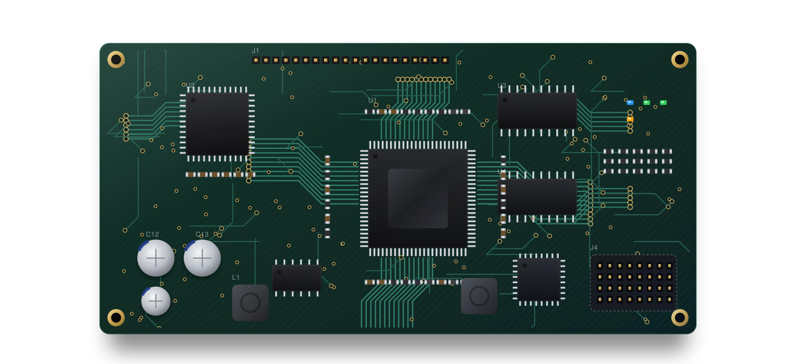
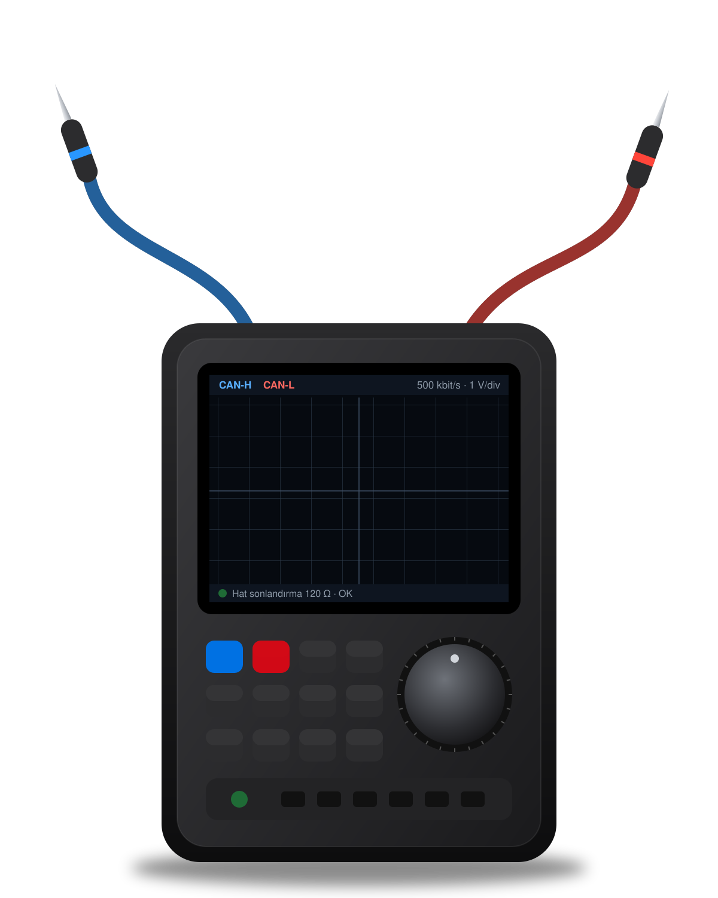

Koç Elektronik
Kurumsal kimlik kılavuzu.
Logomuz, renklerimiz, yazı tipimiz ve iletişim dilimiz. Web sitesi, katalog, kartvizit, araç giydirme ve sosyal medyada markanın her yerde aynı görünmesi için bu kuralları kullanın.
01 · Logo
Koç başı ve kart devresi.
Logomuz; güç ve kararlılığı temsil eden bir koç başı ile, ondan uzanan elektronik devre yollarından oluşur. Logo, “KOÇ ELEKTRONİK” yazısıyla birlikte ya da tek başına kullanılabilir.
Açık zemin · lacivert logo

Kurumsal lacivert zemin · beyaz logo
Koyu zemin · yalnız amblem
Koruma alanı ve boyut
Logonun etrafında, en az koç başının yarısı kadar boş alan bırakın. Ekranda 24 pikselden, baskıda 10 mm’den küçük kullanmayın.
Doğru kullanım
- Açık zeminde lacivert, koyu zeminde beyaz logo kullanın.
- Logoyu orantılı büyütüp küçültün.
- Sade, tek renkli zeminler tercih edin.
Yanlış kullanım
- Logoyu esnetmeyin, eğmeyin, döndürmeyin.
- Renklerini değiştirmeyin, gölge ve efekt eklemeyin.
- Karmaşık fotoğrafların üzerine koymayın.


02 · Renkler
Lacivert güven, kırmızı enerji.
Ana renklerimiz kurumsal lacivert ve koç kırmızısıdır. Butonlar kurumsal lacivert; web sitesindeki metin bağlantıları için vurgu mavisi kullanılır. Renk koduna tıklayarak kopyalayabilirsiniz.
Kullanım oranı: beyaz/açık gri zemin çoğunlukta, lacivert yapıyı taşır, kırmızı yalnızca küçük vurgular içindir.
03 · Tipografi
Sade, okunaklı, modern.
Web’de cihazın sistem yazı tipi (Apple cihazlarda SF Pro) ve yedeği Inter kullanılır. Basılı materyallerde aynı karakterde geometrik bir sans-serif (ör. Inter veya Poppins) tercih edin. Büyük başlıklarda harf aralığı hafifçe daraltılır.
Bold 700 · 64 px
Semibold 600 · 40 px
Semibold 600 · 21 px
Regular 400 · 17 px
Semibold 600 · 13 px
04 · İletişim dili
Net, teknik, güven veren.
Müşterilerimizin önceliği, üretimin kesintisiz sürmesidir. İletişimimiz kurumsal, kısa, açık ve tekniktir; yapılacak işlemi ve uygulanacak testleri net biçimde ifade ederiz. Gündelik ifadelerden, abartılı ve doğrulanamayan iddialardan kaçınırız.
SLOGAN
Sanayinin her adımında teknoloji.
Doğru ifade
Kartlarınız komponent seviyesinde onarılır, test edilir ve raporla teslim edilir.
Müdahale, arıza bildiriminin ardından planlanır.
Yeni kart temininden önce onarım seçeneği değerlendirilmelidir.
Kaçınılacak ifade
Türkiye’nin bir numaralı servisi!
Her arızayı garanti çözeriz.
Kartınızı atmadan önce bize bir gösterin, bakalım.
05 · Görsel dil
Temiz illüstrasyonlar, ince ikonlar.
Şeffaf zeminli, yumuşak gölgeli, ürün fotoğrafı gibi duran illüstrasyonlar kullanırız: koyu yeşil kartlar, altın pedler, mavi ve yeşil durum ışıkları. Hareket varsa hafiftir ve anlam taşır (akan sinyal, yanan LED).
Saha görüntülerinde gerçek tesis ve ekipman videoları kullanılır: sessiz, kısa döngülü ve sakin çekimler. Makine üreticilerinin logoları kadraj dışında bırakılır ya da kırpılır; kişilerin yüzleri ve müşteri tesislerini tanıtan levhalar gösterilmez.




İkonlar
İnce çizgili (1,8 px), yuvarlak uçlu, tek renkli çizgi ikonlar.
06 · Uygulamalar
Kartvizit ve e-posta imzası.
Örnek uygulamalar. Kartvizit ölçüsü 85 × 55 mm; ön yüz kurumsal lacivert, arka yüz beyaz.
Sanayinin her adımında teknoloji.
İsmail Koç
Kurucu · Elektronik Servis
- T0553 115 36 94
- Eikoc317@gmail.com
- ABarbaros Mah. Demirtaş Yolu Cd. No: 409/A, Osmangazi / Bursa
- WTezgâh elektroniği · Kart tamiri · Saha servis
E-posta imzası
| İsmail Koç Kurucu · Koç Elektronik T: 0553 115 36 94 · E: ikoc317@gmail.com Barbaros Mah. Demirtaş Yolu Cd. No: 409/A, Osmangazi / Bursa Sanayinin her adımında teknoloji. |
Marka notu: Koç Elektronik bağımsız bir elektronik servis firmasıdır. Tanıtım materyallerinde makine üreticilerinin logolarını kullanmayın; marka adlarını yalnızca hizmet verilen ekipmanı tanımlamak için, metin olarak kullanın.